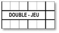

|
|
ATTENTION Si un joueur de champ occupe plusieurs rôles défensifs, au cours d'un match, les retraits, les assistances, les erreurs, les doubles ou triples jeux et les manches joué es doivent être indiqués séparément pour chaque rôle défensif occupé, et doivent être clairement notés sur la ligne correspondant au rôle occupé. |
| PO | Nombre de retraits effectués par chaque défenseur, notés dans la ligne correspond à son nom et à sa position défensive. |
| A | Nombre d’assistances effectués par chaque défenseur, notés dans la ligne correspond à son nom et à sa position défensive. |
| E | Nombre total d’erreur décisives et non décisives commissent par chaque joueurs, notés dans la ligne correspond à son nom et à sa position défensive. |
| DP | Nombre de fois qu’un joueur participe à un double ou triple jeu, notés dans la ligne correspond à son nom et à sa position défensive. |
| IP | Nombre de manches jouées par chaque défenseur, notés dans la ligne correspond à son nom et à sa position défensive. Quand un défenseur est remplacé ou change de position pendant une manche, la valeur est calculée en fonction du nombre de retrait. La valeur fractionnelle d’une manche est indiquée par le nombre de manches complètes suivit de ‘.1’ s’il y a un retrait en plus ou ‘.2’ dans le cas où il y en a eu 2. Trois retraits correspondent à une manche complète. |
Les informations sur les lanceurs, dans le cas ou ils sont à la frappe au début sont toujours notées au niveau de leur noms dans l’ordre au bâton.
Dans le bas de la feuille pour chaque colonne, après les espaces réservés pour les performances des lanceurs, on note le total de chaque colonne.
Dans le cas de la colonne des manches jouées, on note le total de manches jouées par l’équipe, et non pas le total de la colonne des manches jouées par chaque joueur.
|
 |
Le nombre de doubles ou triples jeux fait par une équipe est marqué dans le case à droite de la case comportant ‘DOUBLE-JEU’. |